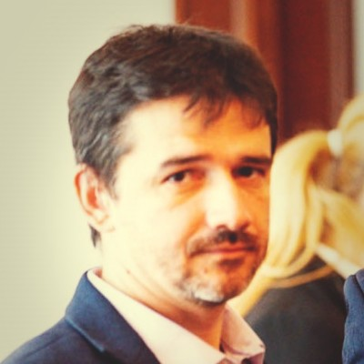

Measurements & instrumentation
Measurement systems, data acquisition, sensor interfaces, signal conditioning and processing.
Research areas →Electrical engineering · Research · Education
Associate Professor, PhD in Electrical Engineering
Measurements and instrumentation, power quality, industrial IoT and e-Health measurement and monitoring systems. Research and education at the National University of Science and Technology POLITEHNICA Bucharest.

Catalogue counts cover the supplied records, including books, teaching materials, articles, thesis and patent publications.
Research interests
Measurement systems, data acquisition, sensor interfaces, signal conditioning and processing.
Research areas →Power and energy measurement, non-sinusoidal conditions and monitoring of electrical systems.
Research areas →Distributed sensor networks, embedded measurement systems and connected monitoring architectures.
Research areas →Sensor acquisition, connected devices and remote monitoring within the Internet of Medical Things.
Research areas →Research & collaboration
Selected publications
Adochiei F-C, Țoi F-A, Adochiei I-R, Argatu FC, Serițan G, Petroiu G-G. HL7 FHIR-Based Open-Source Framework for Real-Time Biomedical Signal Acquisition and IoMT Interoperability. Applied Sciences. 2025; 15(23):12803. https://doi.org/10.3390/app152312803 WOS:001633986400001
Argatu, F. C., Adochiei, I. R., Enache, B. A., Banica, C. K., Serițan, G. C., & Adochiei, F. C. (2025, September). Embedded Power Management and State-of-Charge Estimation in Modular Robotic Platforms: Experimental Validation and Web-Based Monitoring. In International Conference on Nanotechnologies and Biomedical Engineering (pp. 635-644). Cham: Springer Nature Switzerland. WOS:001596032600076
Argatu, F. C., Brezoianu, V., Argatu, V. V., Enache, B. A., Adochiei, F. C., & Icleanu, T. (2019, September). Power Quality Analyzer for Smart Grid-Smart Home Applications. In 2019 54th International Universities Power Engineering Conference (UPEC) (pp. 1-4). IEEE. INSPEC Accession Number: 19135473 DOI: 10.1109/UPEC.2019.8893501 WOS:000619338200043
Teaching & academic practice
From signal acquisition and power quality to distributed measurement and e-Health monitoring.